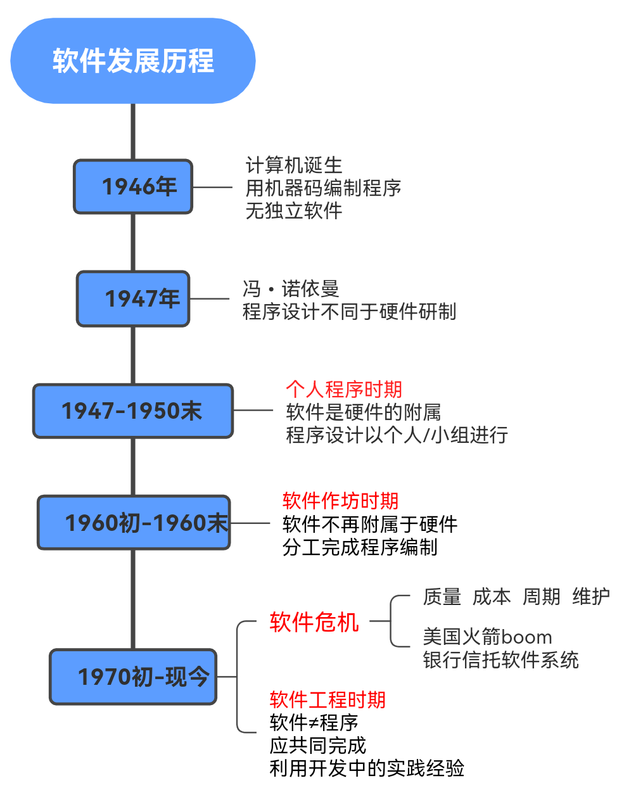
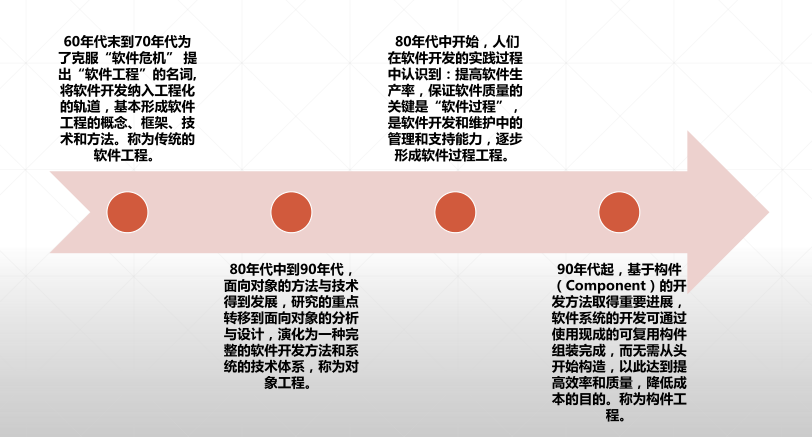
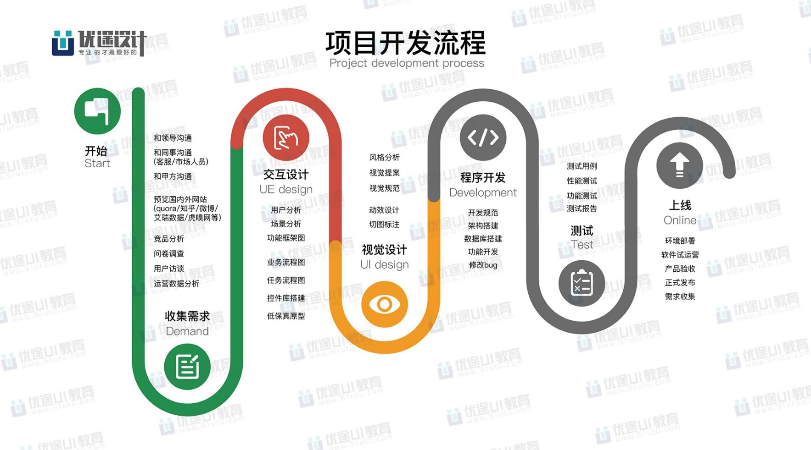
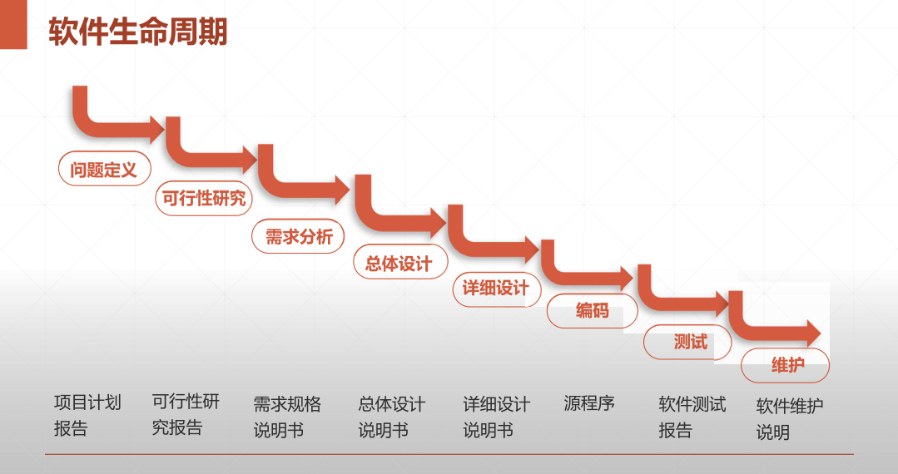

软件变革
Evolution
 How to develop a software
Life cycle
A software goes from defining, developing, running maintenance to eventually going through a period of time called the life cycle of software
The system software life cycle is generally the analysis, design, implementation and testing and maintenance of these stages,
(1)Analysis phase:
Software development first needs to carry out demand research and analysis of perfect demand is an important factor in the success or failure of software development projects, refine the collected user needs, establish a complete analysis model, he is written into the software development process requirements, specifications and preliminary user manual.
(2) Design phase:
Software design can be divided into two stages of summary design and detailed design, in fact, the main task of software design is to break down the software into modules refers to the implementation of a function of the data and program description, summary design is the structure design, its main goal is to give the software module structure, with the software structure diagram, the first task of detailed design is to design the module's program flow, algorithm and data structure, designers according to software requirements specifications documentation, determine the software architecture, and then determine each module implementation algorithm, Data structure and interface, etc., write design specifications, organize design reviews.
(3) Implementation phase:
Software coding refers to the conversion of software design into a computer-acceptable program, that is, written in a certain program design language expressed as a "source program list." A good understanding of the software development language, tool characteristics and programming style will help the choice of development tools Ensure the quality of development products.
(4) Test phase:
Based on the design of test cases, test the various components of the software, and then, in integrating the modules, test whether the functionality and performance of the entire product can meet the existing specifications.
(5) Maintenance phase:
Maintenance refers to the software has been completed and delivered to use, the software products to correct errors, adapt to environmental changes and enhancements and other software engineering revisions, do a good job in software maintenance, not only to remove obstacles, so that the software can work properly, but also can expand software functions, improve performance, bring users significant economic benefits
